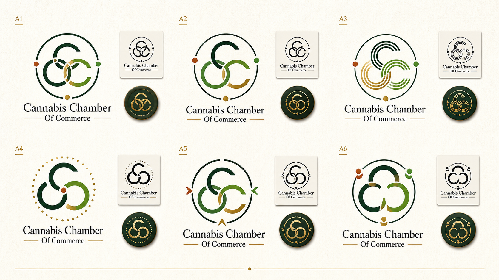
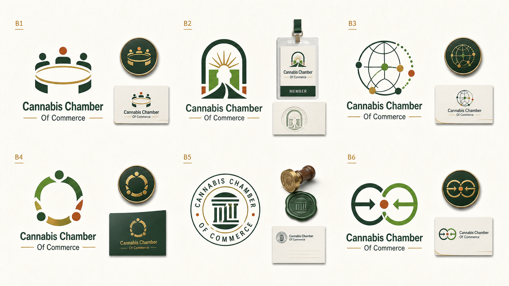
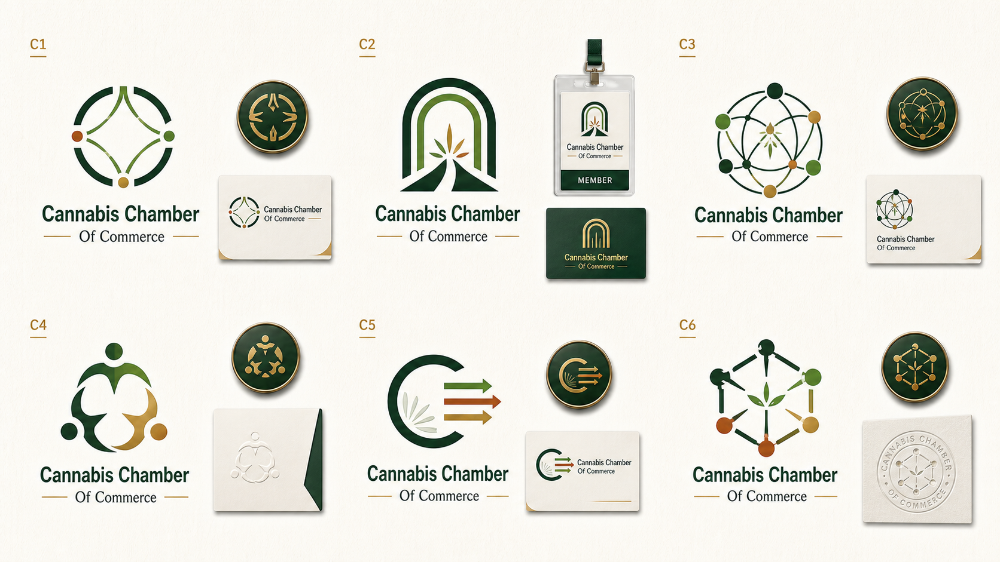

Direction 3 Logo Studies V4
Refine
A2, A3, and A5 are the best continuation of the circular three-C route. A1 drifts leaf-like and should move to the cannabis-hint bucket.
Explore
B3 and B6 are the only new routes I would keep testing. B5 is useful negative evidence because it pulls too official-seal and old chamber.
Leaf Hint
C3 is the strongest subtle cannabis cue. C2, C4, and C6 are too direct for a business trade association logo.
A. Refined Current Idea
Carry: A2
Carry: A3
Carry: A5

B. New Logo Routes
Carry: B3
Carry: B6
Watch: B1

C. Subtle Cannabis Hints
Carry: C3
Possible: C5
Reject: C2 C4 C6
